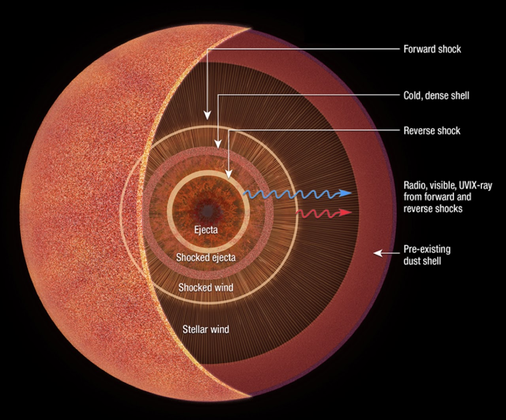
Research Block 01
Dust + Core-Collapse Explosions
Tracing dust formation, circumstellar interaction, and the final evolutionary stages of massive stars with infrared observations.
Block LeadName to be added
Deputy LeadName to be added
A time-domain astronomy collaboration
From exploding stars to feeding black holes, we use the world’s most powerful observatories to catch the cosmos in the act of changing.
About TSST
Transient Science at Space Telescopes brings together observers, theorists, and data scientists to understand the brief, brilliant events that reshape our universe.
We are a compact team within the Space Telescope Science Institute and Johns Hopkins University. We meet weekly, pool resources and expertise, and collaborate across rapid-response observations, archival discovery, precision cosmology, and new computational tools.
Selected research
Our programs span nearby stellar explosions, distant gravitational lenses, dusty environments, and intelligent discovery at survey scale.

Research Block 01
Tracing dust formation, circumstellar interaction, and the final evolutionary stages of massive stars with infrared observations.
Block LeadName to be added
Deputy LeadName to be added
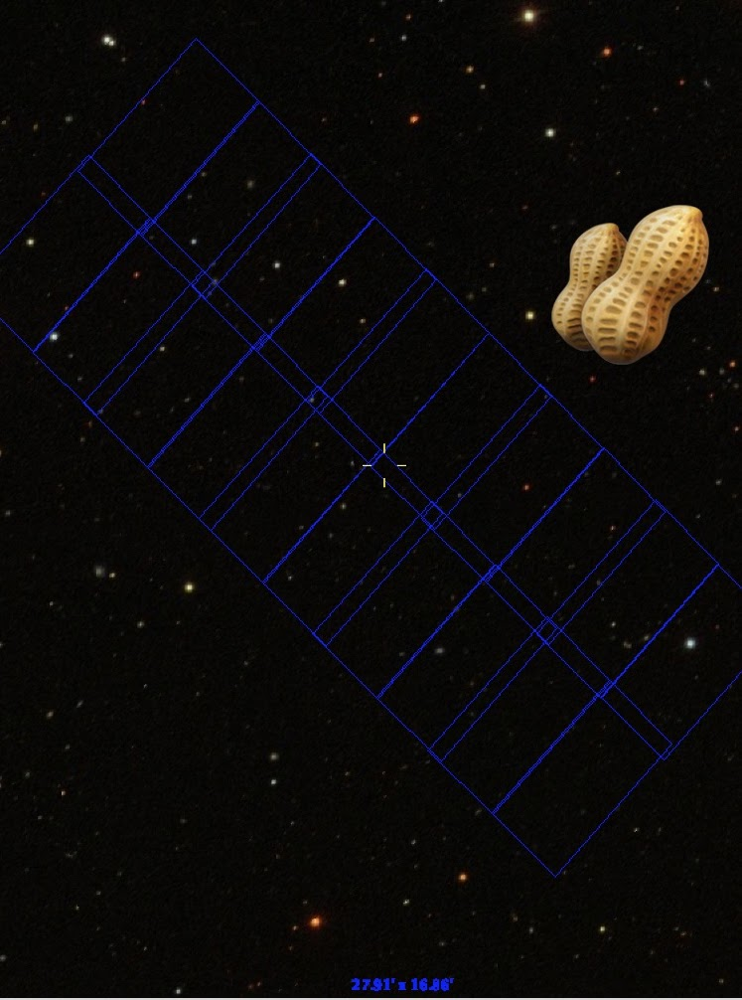
Research Block 02
Finding and characterizing distant supernovae to study stellar explosions and the evolving universe at high redshift.
Block LeadName to be added
Deputy LeadName to be added
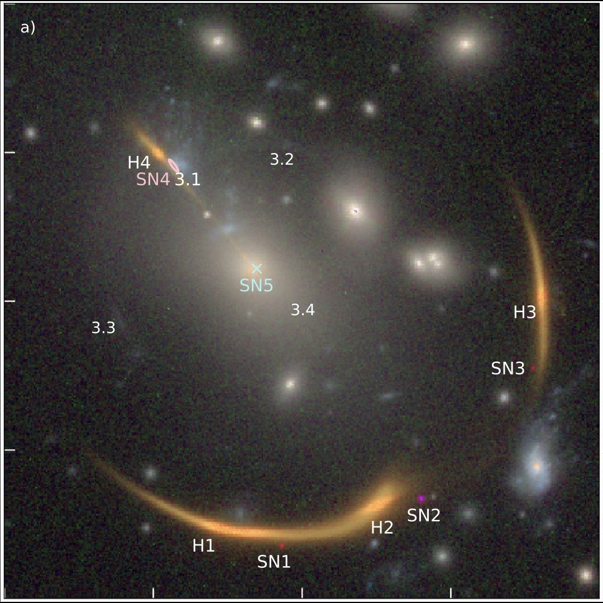
Research Block 03
Using multiply imaged supernovae and their time delays to test cosmology, dark energy, and the expansion rate of the universe.
Block LeadName to be added
Deputy LeadName to be added
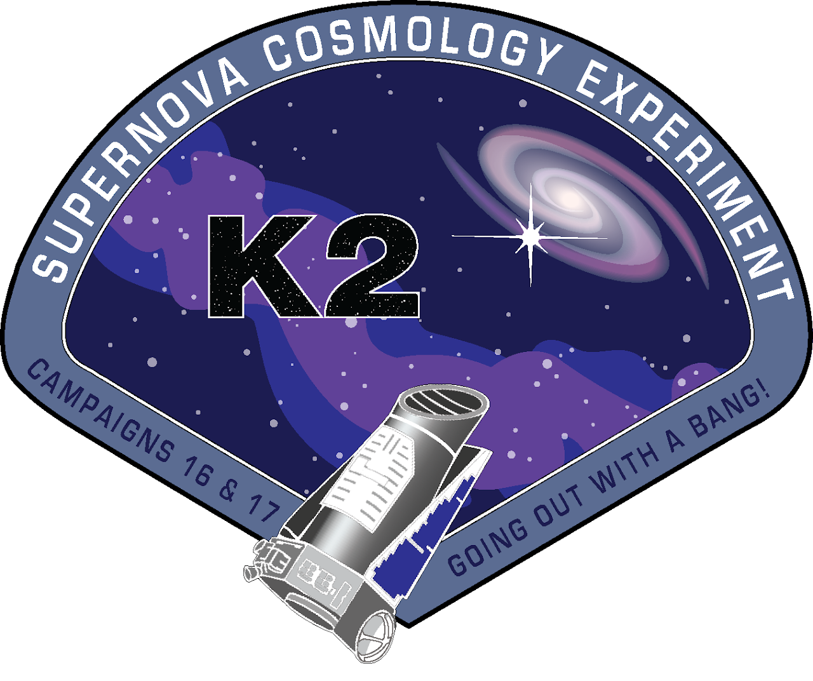
Research Block 04
Improving Type Ia supernova measurements to sharpen constraints on dark energy and the history of cosmic expansion.
Block LeadName to be added
Deputy LeadName to be added
The people
A collaborative group of scientists based at STScI, Johns Hopkins University, and partner institutions.
We share expertise across supernovae, tidal disruption events, cosmology, gravitational lensing, dust, light echoes, machine learning, and software development.
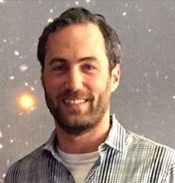
Supernovae · Progenitors · Dust · CSM interaction
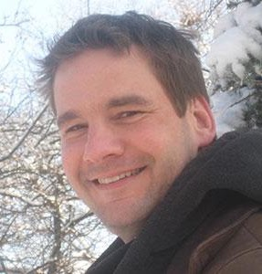
Supernovae · Light echoes · Cosmology · Big data
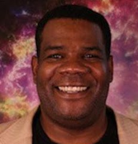
Star formation · Supernovae · Stellar evolution
SN Ia cosmology · Dark energy · Strong lensing
Near-infrared spectroscopy · Dust
High-z transient science · SN Ia cosmology
Supernovae · UVOIR spectroscopy · Radiative transfer
SN Ia cosmology · Dark energy · Strong lensing
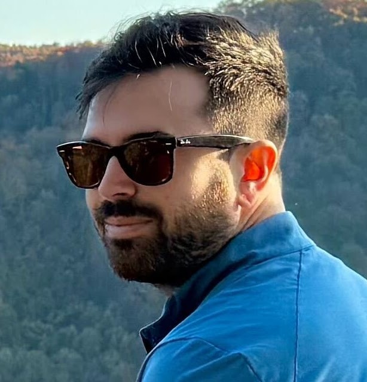
Astrometry · Slitless spectroscopy · Software
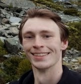
Supernovae · Transients · Cosmology
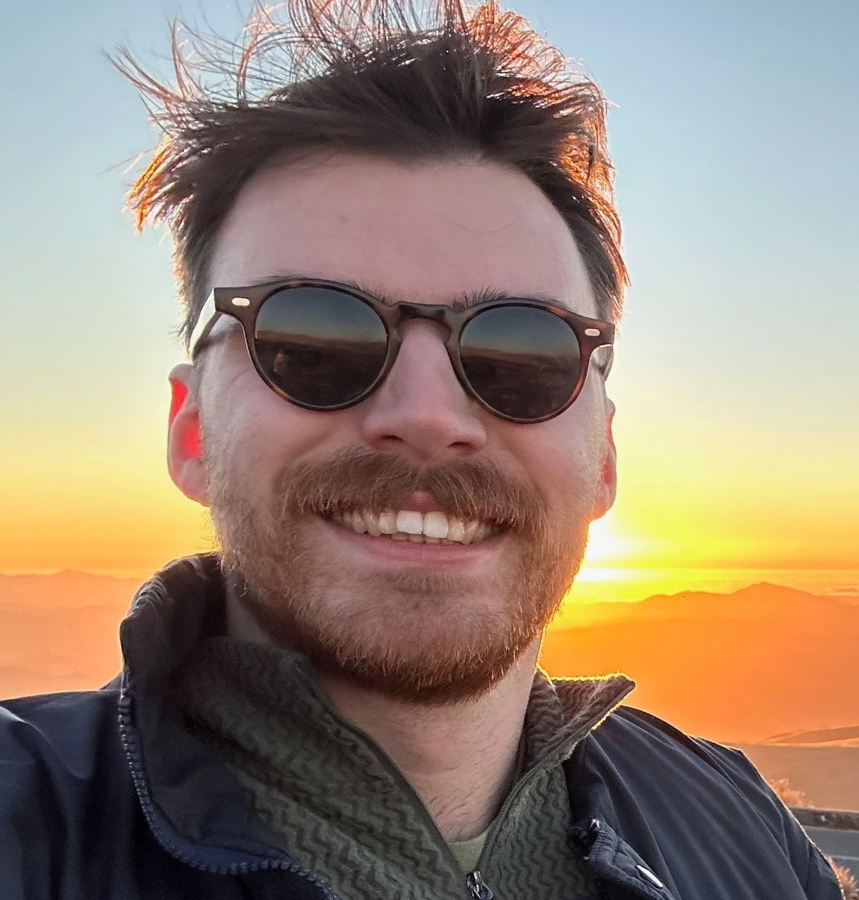
Stripped-envelope supernovae · Dust · Spectroscopy
Type Ia supernova physics · Cosmology · High-z SNe
Supernovae · Transients · Cosmology
Nuclear transients · White dwarf TDEs · Lensing
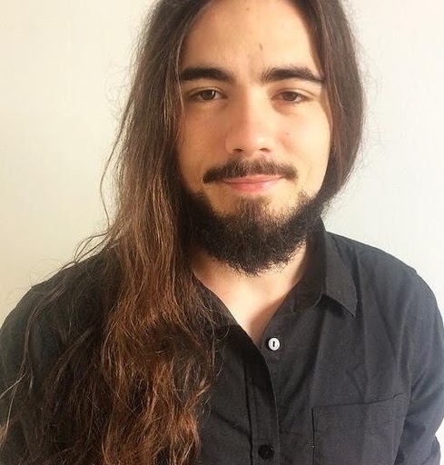
X-ray astronomy · Tidal disruption events · QPEs
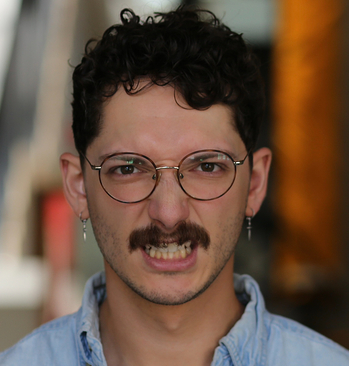
Tidal disruption events · Active galactic nuclei
Supernovae · Cosmology · Light echoes · Data analysis
From NASA ADS
Each team member’s three most-cited refereed papers, synchronized weekly from the Astrophysics Data System.
Loading publication data…
Citation counts change over time and are supplied by NASA ADS ↗.
Stay curious
Follow our work as we explore the changing sky with Hubble, Webb, Roman, and the next generation of time-domain surveys.
Visit the original site ↗